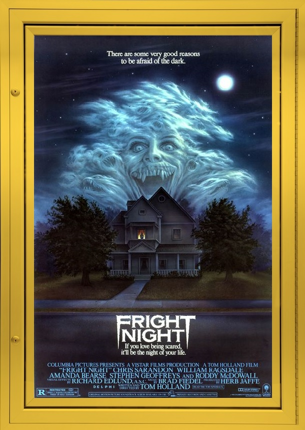

Since their humble beginnings, Vampires have struck terror into the hearts of numerous horror fans, they were portrayed as vicious, un-dead creatures of the night, that feast on the blood of the living and have supernatural powers. Then Stephanie Meyer stepped in and re-did everything we knew about vampires and pretty much ruined them for everyone. Note, I will NEVER, EVER, review the Twilight Saga, but if there is one modern vampire movie I can make an exception to, it's this movie.
FRIGHT NIGHT takes place in a suburban neighborhood during the mid '80s, where a high-school kid, named Charlie, discovers that his new next door neighbor, Jerry, turns out to be a member to the un-dead club, simply put, a vampire. With not many people to turn to for help, Charlie puts it upon himself to defend those that are close to him and ultimately the entire neighborhood from Jerry's thirst for blood.
This movie has two amazing stand-out actors, Chris Sarandon (Prince Humperdinck, from THE PRINCES'S BRIDE) and Roddy McDowall (Cornelius, PLANET OF THE APES). Sarandon plays the vampire, he’s easily on my top five favorite horror movie villains, he OWNS every single scene he's in, and does a great job of being both charming and frightening at the same time. Meanwhile, McDowall stars as a run-down TV host, who Charlie goes to for help, but refuses at first. In my mind, I think it's hilarious seeing Roddy McDowell without a ton of ape makeup and transitioning from a calm, collective character to a spineless weasel. Besides those two, the rest of the cast is great, don't get me wrong.
Overall, if you’re tired of Stephanie Meyer's version of a vampire and looking for something that both respects the traditional vampire mythology and brings it to the modern era (sort of), then you should DEFINITELY check out FRIGHT NIGHT.
FINAL RATING:
FRIGHT NIGHT is available on Blu-Ray and DVD. You can find this at almost any video-store for a decent price. As for alternate movie recommendations I first you towards FROM DUSK TILL DAWN, it's an awesome '90s movie from the creative duo that is Robert Rodriguez and Quentin Tarantino, and lastly I recommend checking out the 2011 remake for FRIGHT NIGHT, if you're not into the '1980s setting, then you should at least check this one out. This takes place in Nevada and has David Tennant replacing McDowall as the run-down host, but make no mistake he is fantastic, absolutely fantastic.
Until Next Time, Be Mindful of Your Neighbors…